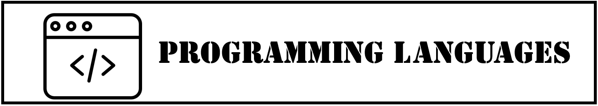

Programming Languages
C
Java
Javascript
Python
Java
1.How did it come to be made?
An object-oriented programming language developed by Sun Microsystems in 1995.
The founder is James Gosling.
it was voted the most spoken language in Q3 in 2019.
2.Advantages and Disadvantages of Java Language
advantages
Numerous developers and references
Relatively high productivity
Device Compatibility
Stability>
Source Code Readability
disadvantages
Slow speed
inconvenient to deal with exceptions.
Source Code Length
linguistic inconvenience
3.If you want to run the Java code online, click
here.
Software Centric World
Web-Programming